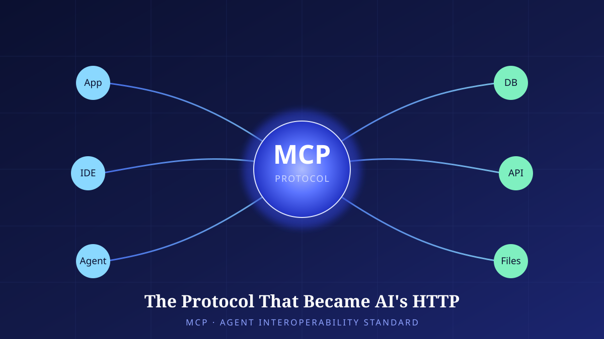

The Protocol That Became AI's HTTP: MCP and the Interoperability-Standard War
The moment chatbots turn into 'acting agents,' the bottleneck is no longer intelligence but the standard for connection. We anatomize how Anthropic's MCP became the de facto standard — its architecture, its politics, and the security homework that remains.

From Models That Converse to Agents That Act
For the past several years, progress in language models has largely been aimed at 'smarter conversation.' Yet for a model to be genuinely useful in real work, conversation alone is not enough. Only when it reads the user's calendar, queries an in-house database, opens a file, and calls an external API does it actually get something done. At this point the problem shifts away from the model's intelligence and toward the problem of connection. However clever a model may be, if it cannot reach the tools that serve as its hands and feet, it remains a box that merely talks well.
Here an old headache of software engineering resurfaces: the so-called M×N integration problem. If M AI applications must connect to N external tools and data sources, the naive approach requires writing M×N custom integrations one by one. Every app and every tool has its own authentication scheme, data format, and error handling. Each time a new tool is added, every app must build a fresh adapter for it; each time an app is added, every tool must be reconnected. This combinatorial explosion was the true bottleneck of the agent ecosystem.
It is not as though earlier attempts were lacking. Each platform put forward its own 'plugin' or 'function calling' spec, opening a path for models to invoke external capabilities. But those specs were mutually incompatible. A tool built for one platform could not be used as-is on another, and tool makers had to repeat the same work for as many platforms as they wished to support. Specs born for convenience ended up splitting the ecosystem into separate islands. In the end, what was needed was not any single company's plugin spec but a common convention belonging to no one.
History has solved such problems with 'common conventions.' Making different machines converse in one language is the power of a standard. Behind the web's explosive growth lay a simple, open protocol called HTTP. Because any server and any browser spoke the same convention, a connection could be established even when neither party knew the other's internal affairs. This is why people naturally reach for the analogy of 'AI's HTTP' when they talk about MCP. Turning M×N into M+N — making it so that an app need only speak the protocol and a tool need only speak the protocol. That is the liberation a standard promises.
Chapter 2. Anatomy of the ProtocolWhat Exactly Did MCP Standardize?
MCP is an open protocol that Anthropic released on November 25, 2024. David Soria Parra and Justin Spahr-Summers, who led its development, set out to unify the way models access external context into a single convention. The structure divides, surprisingly simply, into three layers: the Host application the user faces, the Client that speaks the protocol within it, and the MCP Server that exposes the actual tools and data. The client inside the host connects to the server, and the server announces the capabilities it can offer in a standard format.
The capabilities an MCP server exposes fall broadly into three kinds. The first is tools: functions the model can invoke to produce real side effects — units of 'action' such as sending an email, creating a record, or executing code. The second is resources, data the model can read and treat as context; a document, a file, or a slice of a database belongs here. The third is prompts, interaction templates pre-tuned for a particular task. The key point is that all three are expressed in a single convention. An app need not know in advance what a given server can do. Once connected, the server offers up its own list of capabilities, and the model picks what it needs from among them.
Picturing these three capabilities in actual use makes the structure clearer. Suppose a developer says to their IDE, "Summarize the open issues in this project." The client in the host IDE queries the connected issue-tracker MCP server, reads the issue list as a resource, and the model builds a summary from it as context. Then, when the developer says, "Assign an owner to the most urgent one," this time the model invokes a tool exposed by the same server to change an actual record. The user need not know which server uses which API, because the protocol hides those details. This 'discoverability' is precisely the decisive difference between hardcoded integration and MCP.
The v1 specification, scheduled for release on July 28, 2026, reforged this structure for large-scale operation. The biggest change in this version — which issued a release candidate (RC) on May 21, 2025, and went through ten weeks of validation — is a stateless core. Early MCP assumed the client and server maintained a single session, which becomes a burden for a service that must handle many concurrent users. If a session is pinned to a particular server instance, requests cannot be routed to just any server. v1 removes the session-routing requirement, letting an MCP server stand behind an ordinary load balancer and scale horizontally like a plain stateless web service.
Why Did the Competitors Gather Under One Banner?
Even a technically well-designed protocol does not become a standard on that merit alone. A standard is always a product of politics. What is striking is that although MCP began as one company's proposal, its competitors joined quickly. In March 2025 OpenAI announced support for MCP, and in April Google DeepMind declared its adoption. Rivals fighting fiercely in the model market converged on a single standard specifically when it came to the 'convention of connection.'
A cold calculation underlies this cooperation. Had each camp pushed its own connection convention, tool makers would have agonized over which side to take, splitting the ecosystem. A fragmented ecosystem benefits no one. Conversely, if the connection layer is opened as a common standard, the competition over models that plays out on top of it takes place in a larger market instead. It amounts to building the table together and then competing with the dishes served on it. The protocol's open, non-proprietary character made this calculation possible. Had a single company held the keys to the convention, competitors would not have climbed aboard so readily.
That logic advanced a step further in December 2025, when Anthropic donated MCP to the Agentic AI Foundation (AAIF) under the Linux Foundation. This foundation was co-established by Anthropic, Block, and OpenAI. Transferring ownership of the protocol to a neutral nonprofit foundation signals that no single company can privatize it or monopolize its direction. To make a standard a true public good, its maker must also know when to let go. The foundation donation is the device that institutionally locks in that trust.
The Wider the Connection, the Wider the Attack Surface
A standard makes connection easy. And an easier connection becomes, in the same stroke, a wider attack surface. In April 2025, researchers pointed out the security vulnerabilities MCP carries. The most prominent are prompt injection and poisoned tools (rug pull / tool poisoning). The former is an attack that hides malicious instructions inside the external data the model reads, inducing the model to take actions the user never intended. The latter is a case in which a tool that appears harmless on the surface is actually designed to quietly exfiltrate sensitive data.
What makes this danger especially thorny is that MCP's strength is at once the channel for the danger. The structure in which a server declares its own capabilities and the model trusts and invokes them is convenient, but once that trust is abused, defense is hard. The model reads a tool's description and makes a judgment — yet that description itself can be manipulated. The blurring of the line between reading data and following instructions is the fundamental challenge of agent security. v1's strengthening of OAuth 2.0/OIDC alignment and issuer verification is an effort to shore up the authentication and identity part of this surface, but a protocol alone cannot block attacks that unfold at the 'semantic' layer, such as prompt injection.
This tension shows plainly in the reality of adoption too. Placing two forecasts from the analyst firm Gartner side by side sharpens the picture. On one hand, Gartner predicts that by the end of 2026, 40% of enterprise apps will feature task-specific AI agents (a sharp rise from less than 5% in 2025) — a forecast that agents will move beyond experimentation into products' basic functionality. Yet the same firm, on the other hand, also predicts that by 2027, more than 40% of agentic AI projects will be canceled, citing excessive cost, unclear business value, and inadequate risk control. These two numbers are not a contradiction but the front and back of the same wave.
| Aspect | Individual custom integration | MCP standard integration |
|---|---|---|
| Integration complexity | M×N (combinatorial explosion) | M+N (converges on the protocol) |
| Adding a new tool | Every app rewrites its adapter | Adding one server exposes it to all apps |
| Capability discovery | Hardcoded in advance | Server declares itself on connection |
| Scalability | Sessions and auth each their own way | Stateless core · standard OAuth |
| Governance | Owned separately · incompatible | Neutral foundation (AAIF) · 12-month deprecation grace |
| Core risk | Maintenance debt | Widened attack surface (injection · tool poisoning) |
Why does such a gap arise? In the early stage of technology adoption, 'can do' always outruns 'should do.' Once the standard made connection cheap, many organizations simply bolted on agents — but only belatedly asked what those agents replaced and how much value they created. The pilots were dazzling, yet the moment they moved into operation, the bills for cost, reliability, and security arrived. This is exactly where Gartner predicts cancellation. What is interesting is that even this wave of cancellation is not a failure of the standard but a process of maturation. What remains after the siftable is sifted out will be the agents that are genuinely useful.
That standardization accelerates adoption is clear. When the cost of connection falls, the threshold for trying also falls. But an easier attempt does not make success easier. If anything, the lowered threshold draws in even unprepared projects, and a good many of them fold without ever proving their value. MCP has admirably solved 'how to connect,' but 'what to connect for' and 'how to control that connection safely' remain each organization's homework.
Chapter 5. Outlook and ClosingWhat Comes After the Convention Is Laid
The 2026 MCP roadmap points in four directions: transport scalability, agent-to-agent communication, governance maturity, and enterprise requirements. Agent-to-agent communication in particular foretells the next phase. If MCP has so far solved the problem of one model reaching many tools, the next is the problem of many agents collaborating with one another. Beyond a model calling tools, a world in which an agent invokes and delegates to another agent as if it were a tool — on that terrain the meaning of interoperability broadens further still.
Looking back, MCP's short history offers a compressed view of the early internet's standard-formation process. A convention proposed by one company gains force through a competitor's adoption, passes to a neutral foundation to become a public good, and evolves toward emptying out state for large-scale operation. Just as HTTP opened the web, the analogy that MCP is the key opening the age of agents is therefore not mere exaggeration. Yet a key opening a door and what one does beyond that door are separate matters.
The expression 'AI's HTTP' is therefore a blessing and a warning at once. HTTP made the web possible, but all of the web's spam, fraud, and abuse also grew on top of it. The convention is neutral, and what grows on top of it is up to us. Standing before the door MCP has opened, the question we must ask is not "can we connect" but "why, and how safely, do we connect." The winner of the standards war has already been more or less decided, but the real question — what we will build with that standard — has only just begun.
References
- Anthropic, “Introducing the Model Context Protocol,” 2024-11-25. MCP's first public announcement (developers David Soria Parra, Justin Spahr-Summers). anthropic.com/news/model-context-protocol
- “Model Context Protocol,” Wikipedia. MCP overview; adoption by OpenAI (2025-03) and Google DeepMind (2025-04); the 2025-12 donation to the Agentic AI Foundation (AAIF; co-founded by Anthropic, Block, and OpenAI) under the Linux Foundation; researchers' 2025-04 identification of prompt-injection and poisoned-tool vulnerabilities. en.wikipedia.org/wiki/Model_Context_Protocol
- MCP Blog, “Release Candidate for MCP v1,” 2026. The core of the v1 specification (release slated for 2026-07-28; RC on 2026-05-21, 10 weeks of validation) — stateless core, MCP Apps (sandboxed iframe UI), the Tasks extension, OAuth 2.0/OIDC alignment (RFC 9207 issuer verification), and lifecycle governance (at least 12 months' deprecation grace). blog.modelcontextprotocol.io
- MCP Blog, “2026 MCP Roadmap.” Directions of transport scalability, agent-to-agent communication, governance maturity, and enterprise needs. blog.modelcontextprotocol.io/posts/2026-mcp-roadmap
- Gartner (forecasting and analyst firm), press release 2025-08-26. Forecast that by the end of 2026, 40% of enterprise apps will feature task-specific AI agents (up from less than 5% in 2025); and that by 2027, more than 40% of agentic AI projects will be canceled (cost, unclear value). Both figures are Gartner forecasts. gartner.com
Read next
 Research · Retrospective22
Research · Retrospective22Where, and What Happened: Wiring an Address Knowledge Graph to Multimodal Disaster Perception
The language of a disaster scene arrives as an address. But the judgement is made from video and sensors. Between those two languages sits a gap nobody fills for you. This year I built two pieces of software, one on each side of it — a knowledge graph that resolves addresses into coordinates and relations, and a perception API that reads four modalities on a single backbone. This is a record of trying to make them one stack, and of what is still undone.
 Tech · Issue21
Tech · Issue21Mining, Called Learning: The Generative-AI Copyright and Data-Licensing War
Generative AI was built by swallowing the writing, pictures, and code humanity has piled up over centuries. That swallowing stands behind an old shield called fair use. But in 2025, courts and markets began re-measuring the shield. Lawsuits and a $1.5 billion settlement, licensing deals spreading quietly, "content signals" closing the door on the web, and a technology that asks provenance back — this is a calm map of the war over training data.